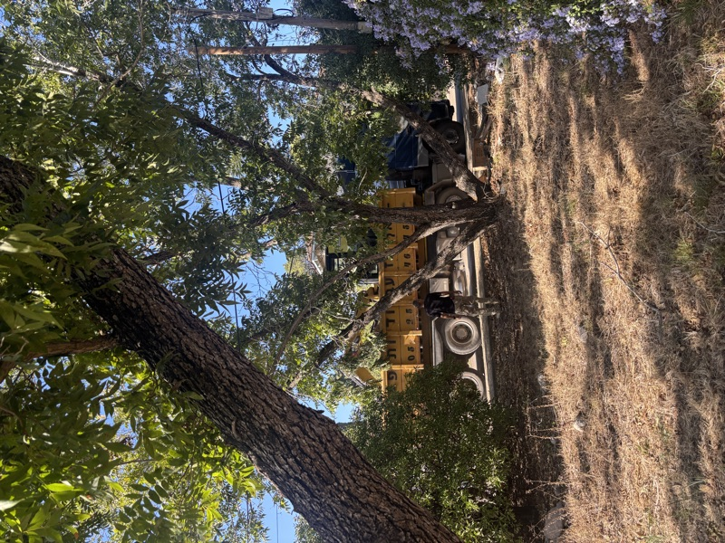

The House · Alonei Abba
Gal & Jishai
0%
Nov 2025
Jan 2027
Timeline
January 2027
Move In!
Home sweet home in Alonei Abba.
October 2026
Roof On
Covered from the rain. The big milestone.
June 2026
First Floor Done
Walls up, windows in. Starting to look like a house.
March 2026
Foundation Poured
Concrete in the ground. The house has its bones.
December 2025
Demolition Complete
Old structure torn down, site cleared and ready.
November 2025
Construction Begins
Breaking ground on the new house. Here we go!
October 2025
Demolition
Tearing down the old to make way for the new.
